Esta actividad consistió en montar un sitio web con WordPress en un entorno local, dotarlo de una identidad propia, un formulario de contacto que guarda sus datos en la base de datos y una hoja de estilos externa, y finalmente migrarlo a un hosting gratuito. Para el ejercicio inventé una empresa, Café Nahual, una tostaduría de café de altura mexicano; escogí ese giro porque los productos (café, accesorios, suscripciones) se prestan bien para convertir después el sitio en una tienda virtual.
El sitio se compone de cinco páginas (Inicio, Historia, Productos y servicios, Enlaces de interés y Contacto), un tema propio llamado cafe-nahual y un plugin propio, Nahual Contacto, que evita depender de plugins externos.
2. Entorno local
[INSERTAR CAPTURA XAMPP 1] Instalación de XAMPP (asistente de instalación terminado)
[INSERTAR CAPTURA XAMPP 2] Panel de control de XAMPP con los módulos Apache y MySQL en ejecución
La actividad sugiere XAMPP (Apache Friends, s. f.), que reúne el servidor Apache, MariaDB/MySQL y PHP. En mi equipo trabajé desde el subsistema Linux de Windows (WSL2, Ubuntu), así que en lugar del instalador gráfico de XAMPP para Windows usé el mismo tipo de componentes (PHP, MariaDB y phpMyAdmin) instalados con el gestor de paquetes Homebrew: cumplen exactamente el mismo papel —servidor, base de datos y administrador de base de datos— que XAMPP le da a WordPress. Dejo aquí el espacio para las dos capturas del instalador y el panel de XAMPP en caso de que se pidan tal cual.
3. Base de datos para WordPress
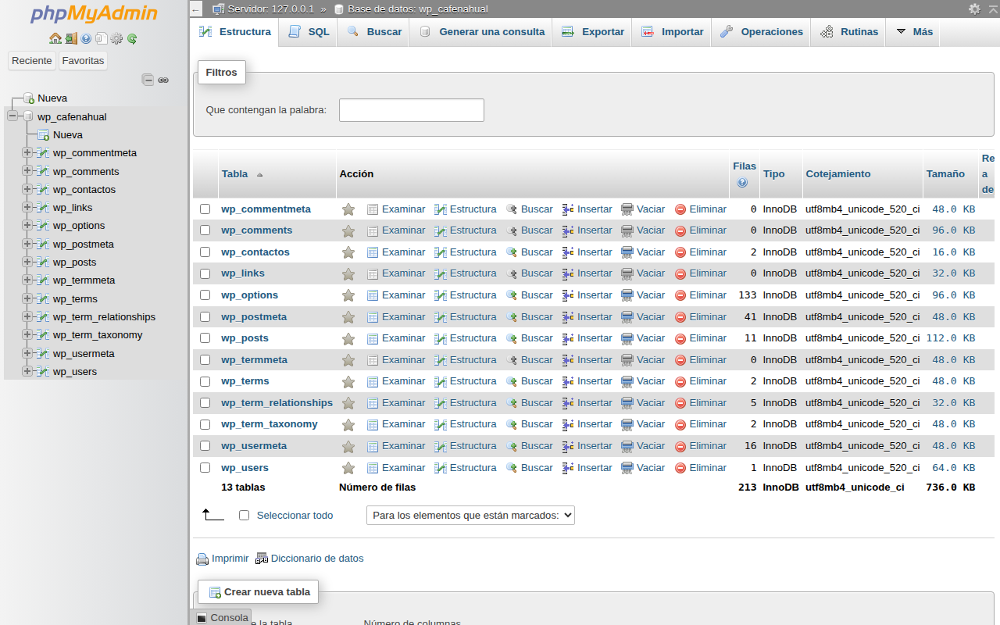
Figura 1. Base de datos wp_cafenahual con las tablas de WordPress y la tabla propia wp_contactos, vista desde phpMyAdmin en mi máquina local.
Desde phpMyAdmin (phpMyAdmin, s. f.) se creó una base vacía con cotejamiento utf8mb4_unicode_ci para que WordPress guarde correctamente acentos y eñes. WordPress crea sus 12 tablas al instalarse; la decimotercera, wp_contactos, la crea el plugin del formulario al activarse.
4. Instalación de WordPress
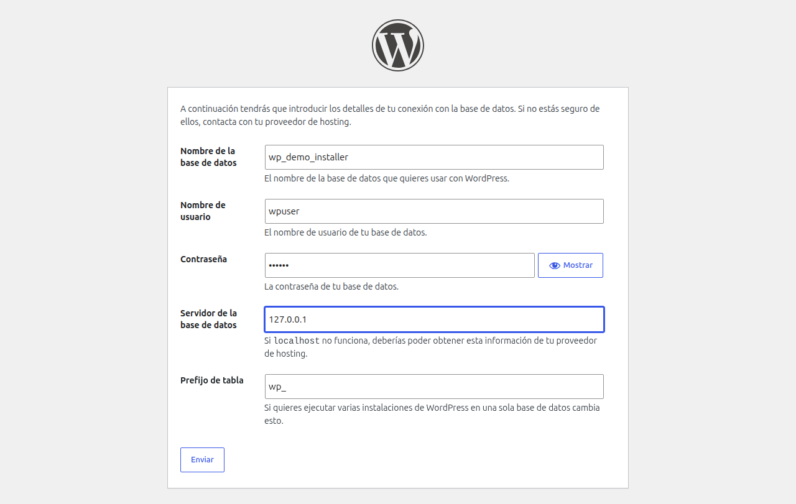
Figura 2. Asistente de WordPress pidiendo los datos de conexión a la base de datos.
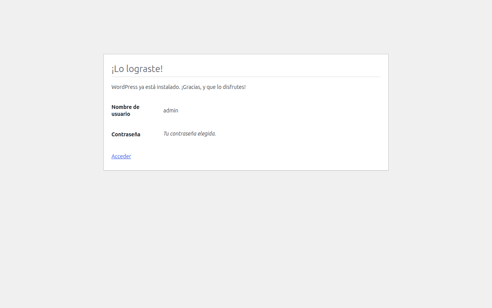
Figura 3. Pantalla “¡Lo lograste!” al terminar la instalación.
Se descargó WordPress en español desde el sitio oficial (WordPress.org, s. f.-a). Al abrir el sitio en el navegador, el instalador solicitó los datos de la base (nombre, usuario, contraseña y servidor) y después el título del sitio y el usuario administrador. Estas dos capturas corresponden a una instalación de prueba independiente, hecha para documentar el asistente sin tocar la base de datos del sitio ya en marcha; el sitio real de Café Nahual se dejó instalado con WP-CLI (WP-CLI, s. f.), la herramienta de línea de comandos oficial de WordPress, que ejecuta el mismo procedimiento que este asistente.
5. Sitio de la empresa
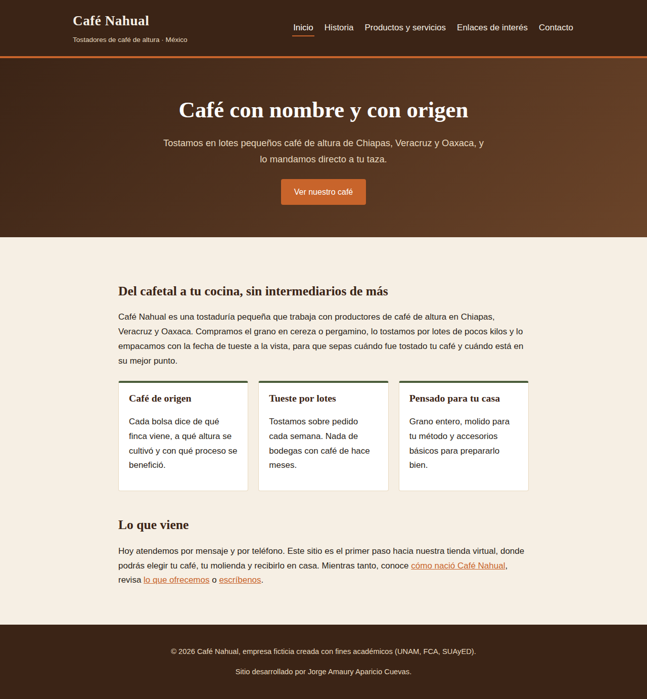
Figura 4. Página de inicio de Café Nahual.
Una portada breve presenta la empresa y tres ideas que la distinguen (café de origen, tueste por lotes y productos para el hogar). El menú lleva a las demás secciones.
5.1 Historia del nombre y del giro
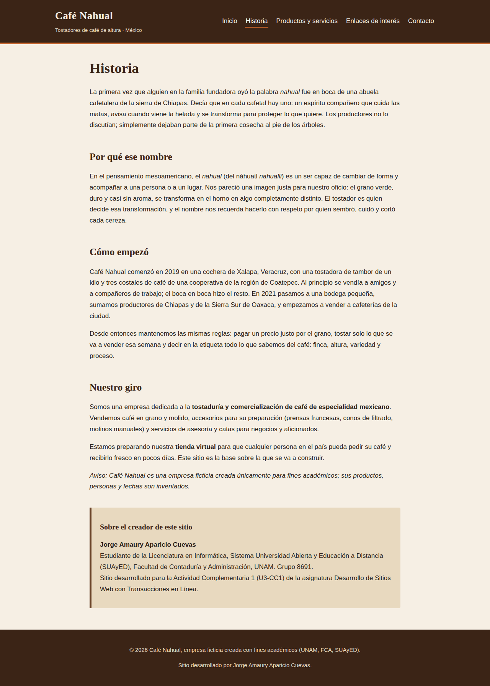
Figura 5. Página “Historia”, con la nota sobre el creador del sitio al final.
La historia explica el origen del nombre (el nahual mesoamericano como figura que se transforma y acompaña, idea que se relaciona con la transformación del grano en el tueste), cómo comenzó la empresa y a qué se dedica. Al final se incluyen los datos del creador del sitio: Jorge Amaury Aparicio Cuevas, estudiante de Informática, SUAyED, FCA, UNAM, grupo 8691. La empresa, sus personas y sus fechas son ficticios, y así se aclara en la propia página.
5.2 Productos y servicios
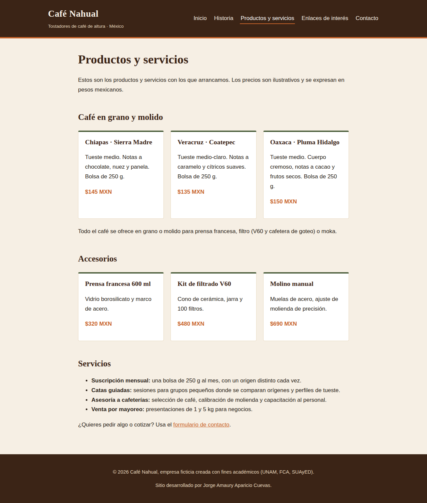
Figura 6. Catálogo inicial de café, accesorios y servicios.
Se listan tres cafés de origen (Chiapas, Veracruz y Oaxaca), tres accesorios y cuatro servicios. Los precios son ilustrativos; esta estructura será la base del catálogo de la tienda virtual.
5.3 Enlaces de interés
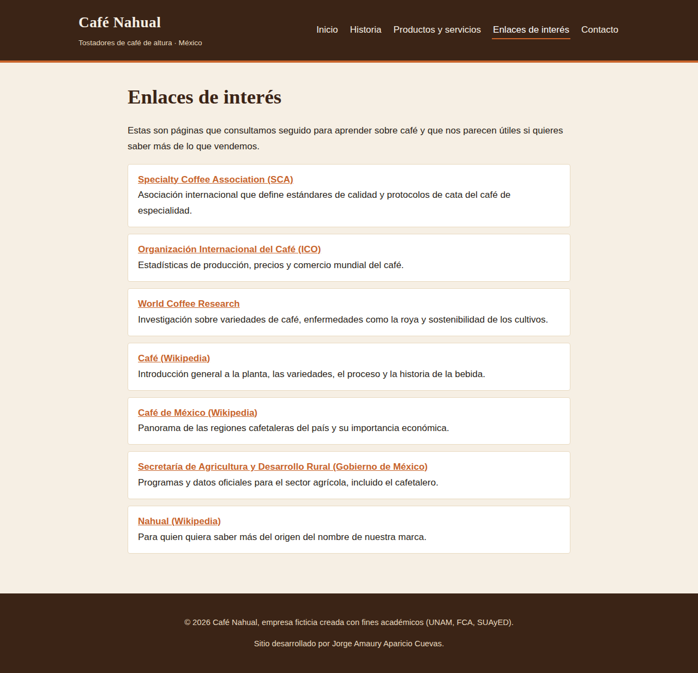
Figura 7. Hipervínculos a sitios relacionados con el café.
Se agregaron siete hipervínculos externos, todos con target="_blank" y rel="noopener noreferrer": la Specialty Coffee Association (SCA, s. f.), la Organización Internacional del Café (ICO, s. f.), World Coffee Research (s. f.), dos artículos de Wikipedia sobre el café y el café de México, la Secretaría de Agricultura y Desarrollo Rural, y una entrada sobre el término nahual. Antes de publicarlos se comprobó que cada dirección respondiera.
6. Hoja de estilos externa (CSS)
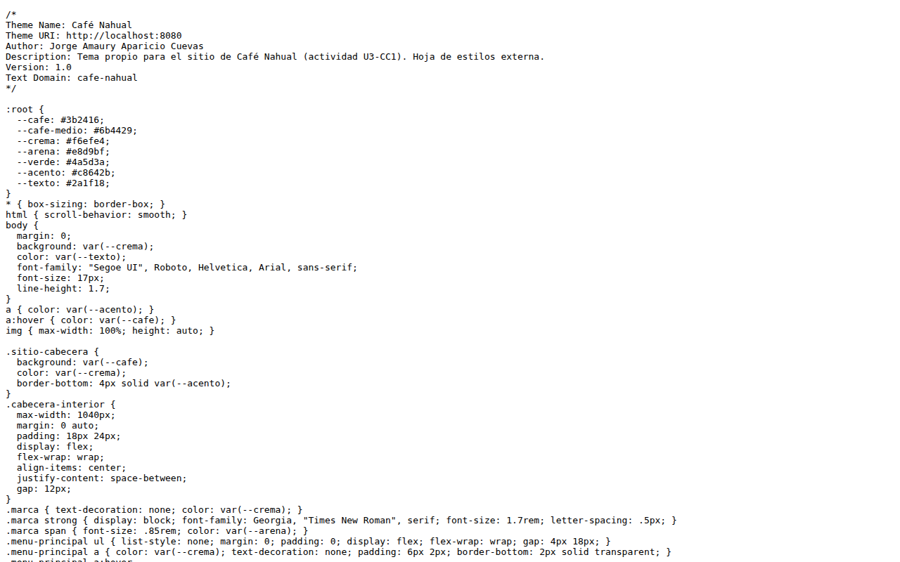
Figura 8. Archivo wp-content/themes/cafe-nahual/style.css, servido como recurso independiente.
Todo el diseño está en un archivo .css propio, dentro del tema. En lugar de escribir una etiqueta <link> a mano, el tema lo registra con wp_enqueue_style() en functions.php, que es la forma recomendada por WordPress (WordPress.org, s. f.-b). La hoja define la paleta de colores como variables CSS, la cabecera, las tarjetas de productos, el formulario y una adaptación para pantallas pequeñas.
7. Formulario de contacto
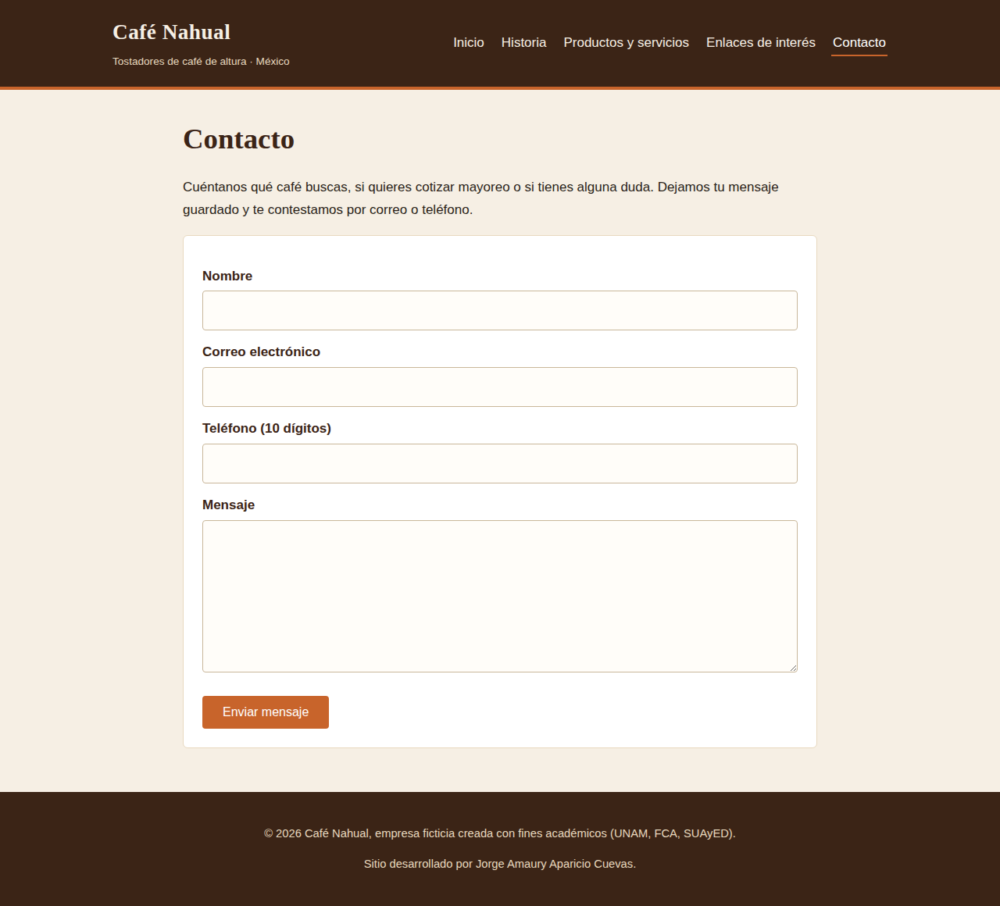
Figura 9. Página “Contacto” con el formulario (shortcode [formulario_contacto]).
El formulario lo implementa el plugin propio Nahual Contacto. Al activarse crea la tabla wp_contactos con las columnas id, nombre, correo, telefono, mensaje y fecha mediante dbDelta() (WordPress.org, s. f.-c). El shortcode [formulario_contacto] (WordPress.org, s. f.-d) muestra el formulario en cualquier página. Como medidas de seguridad usa un nonce (WordPress.org, s. f.-e), sanitiza cada campo con las funciones sanitize_* (WordPress.org, s. f.-f), valida el correo y el teléfono de 10 dígitos, incluye un campo trampa contra bots y guarda con $wpdb->insert(), que escapa los valores.
7.1 Validación
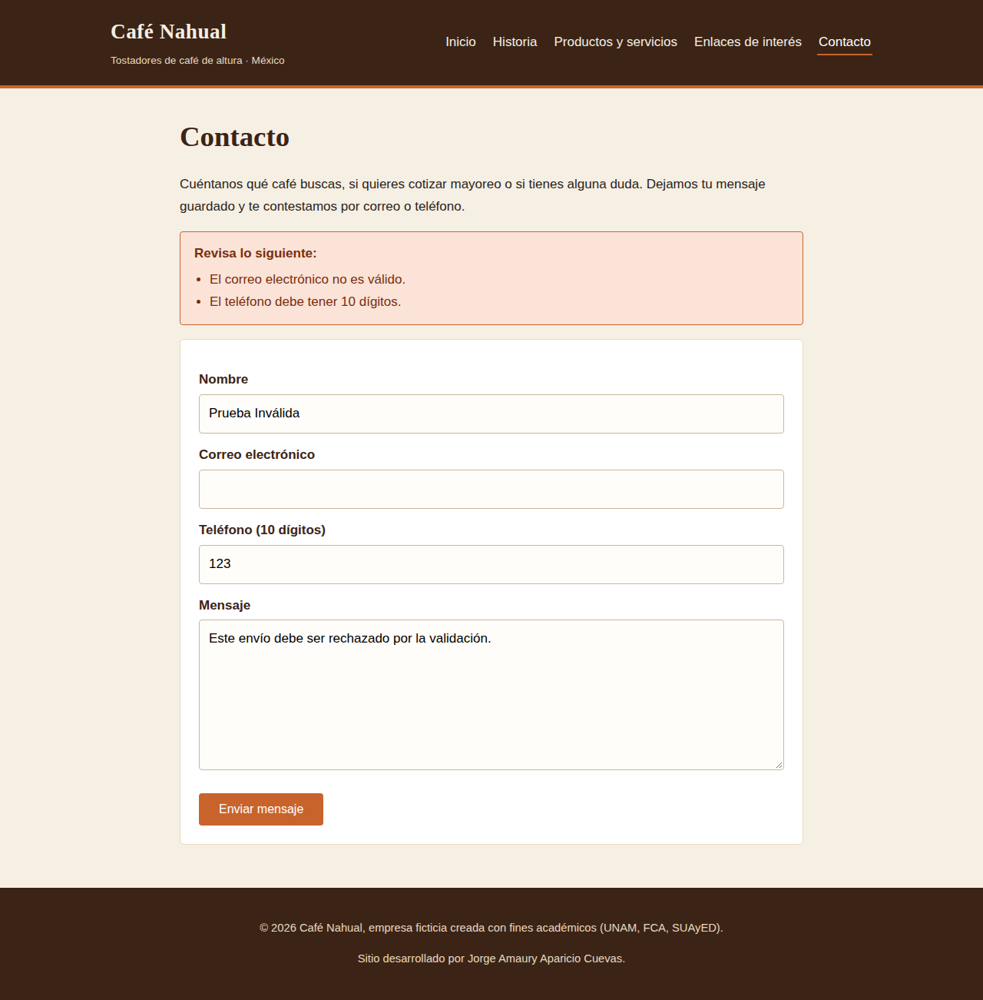
Figura 10. Un envío con correo y teléfono inválidos es rechazado y no se guarda.
7.2 Mensaje de prueba 1
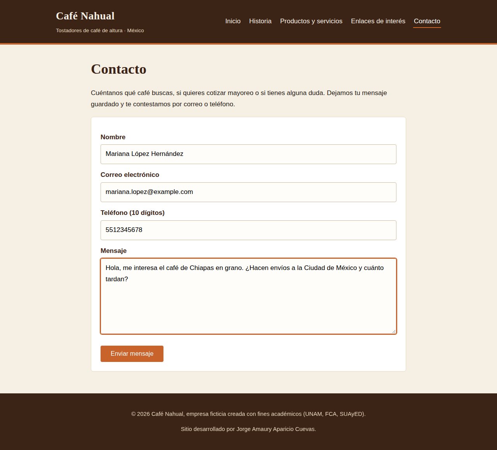
Figura 11. Formulario llenado (mensaje 1).Figura 12. Confirmación tras enviar el mensaje 1.
7.3 Mensaje de prueba 2
Figura 13. Formulario llenado (mensaje 2).
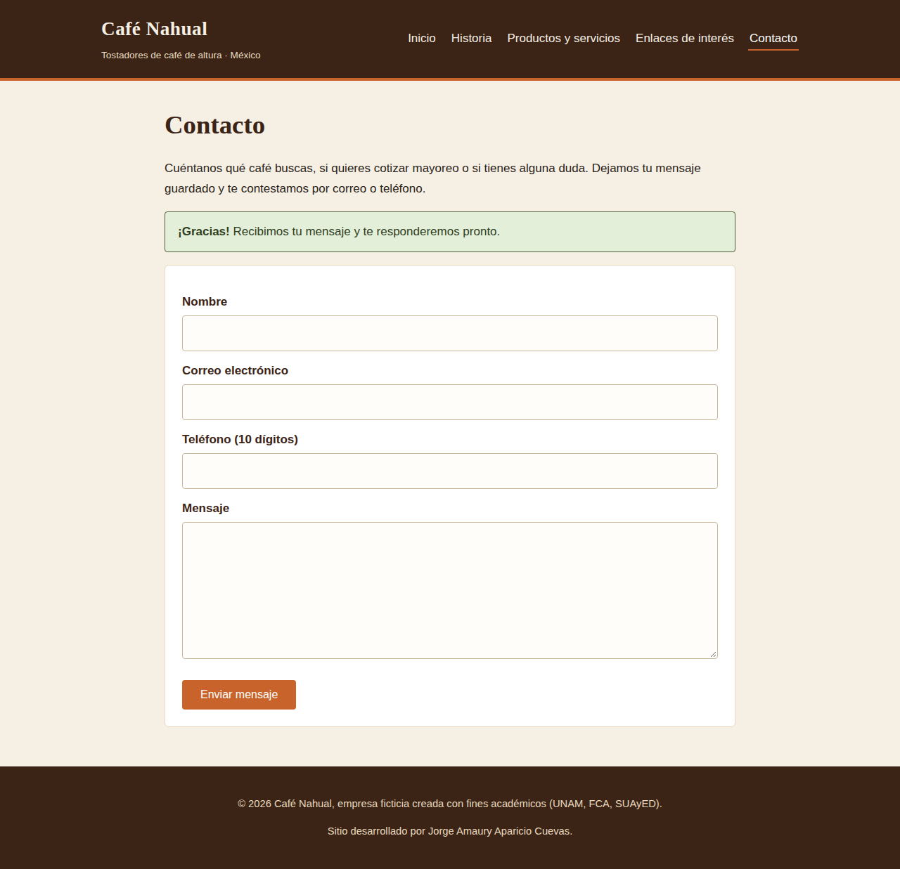
Figura 14. Confirmación tras enviar el mensaje 2.
Los dos mensajes se enviaron llenando y enviando el formulario en el navegador, no insertando datos directamente en la base. Después de cada envío el sitio redirige a la misma página con un aviso de éxito, de modo que actualizar la página no repite el envío.
8. Registros guardados en la base de datos
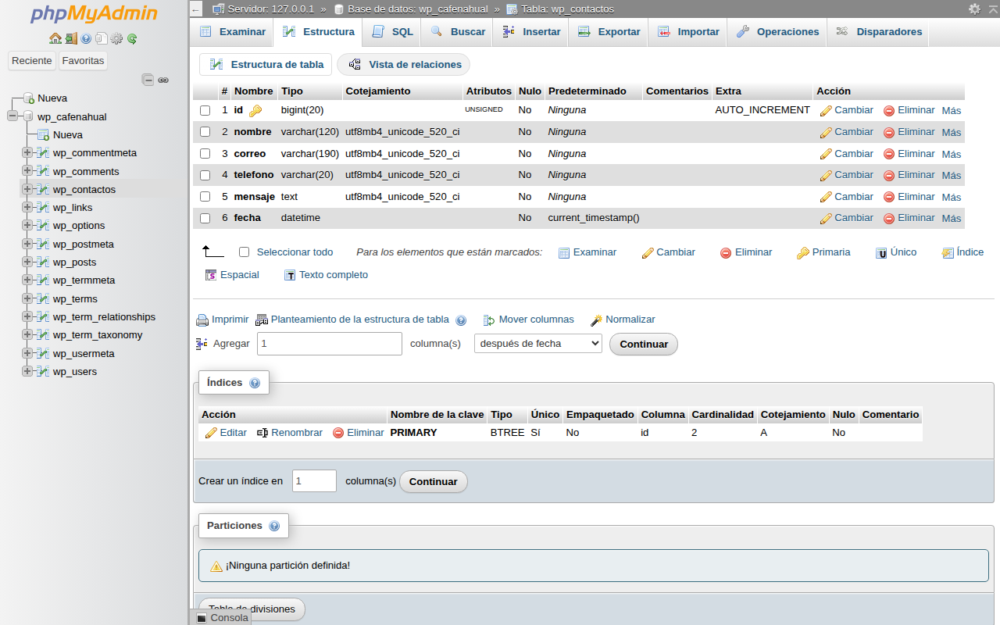
Figura 15. Estructura de la tabla wp_contactos.
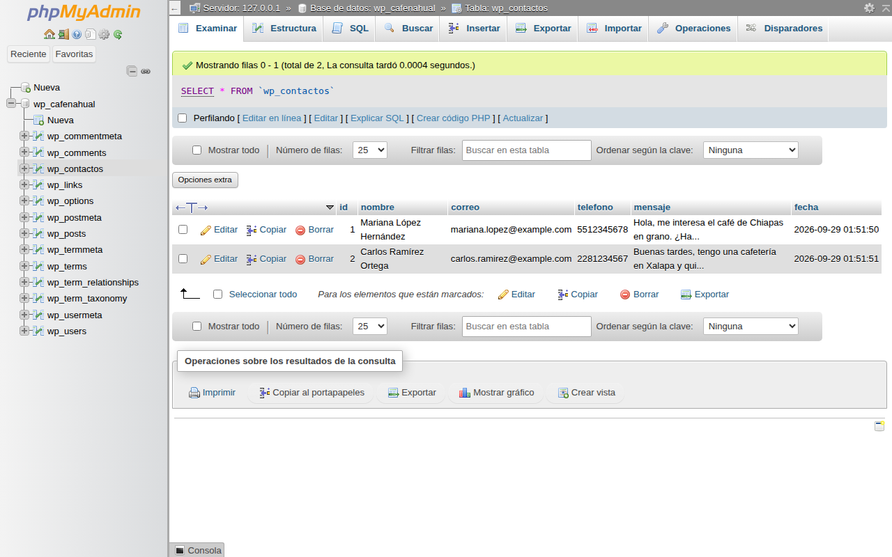
Figura 16. Los dos mensajes de prueba almacenados en wp_contactos.
La tabla contiene exactamente los dos registros creados desde el formulario: nombre, correo, teléfono (solo dígitos), mensaje y fecha y hora de envío.
9. Migración al hosting gratuito
Para migrar se exportó la base de datos reemplazando la URL local por la del hosting (wp search-replace, que respeta los datos serializados), se comprimió la carpeta wp-content y se subieron los archivos a la carpeta htdocs de InfinityFree (InfinityFree, s. f.). En el panel del hosting se creó una base MySQL, se importó el archivo .sql desde su phpMyAdmin y se configuró wp-config.php con los datos de conexión de esa base.
Liga al sitio migrado: {{LIGA}}
[INSERTAR CAPTURA DEL SITIO MIGRADO] El sitio abierto en el navegador con la URL del hosting visible
[INSERTAR CAPTURA DEL FORMULARIO EN EL HOSTING] Mensaje enviado desde el sitio remoto y su registro en phpMyAdmin del hosting